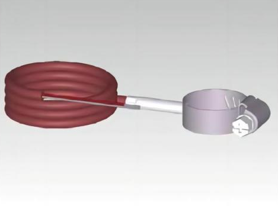
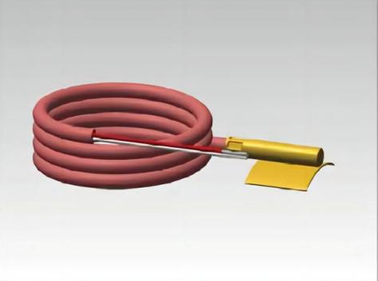

Surface, Slot & Bearing RTDs
TM1111-1 · TM1111-2 · TM1111-3
Clamp-on pipe-surface RTD temperature sensors
Curved contact-block and copper-saddle RTDs (-50 °C to +200 °C) for measuring pipe wall temperature without drilling or welding a thermowell. Built in two 304 stainless steel block geometries (TM1111-1, TM1111-2) and a curved copper saddle (TM1111-3).


Technical specifications
| Applications | Non-intrusive pipe wall temperature measurement on hydronic HVAC loops, heat-pump manifolds, district heating sub-stations, and retrofit piping |
|---|---|
| Sensing Element & Accuracy | Pt100, Pt500, Pt1000 · Compliant with IEC 60751 (α = 0.00385 °C⁻¹) Tolerance classes: Class B, Class A, Class AA |
| Measuring Range | -50 to +200 °C |
| Wetted / Housing Material |
TM1111-1 & TM1111-2: Stainless steel 304 contact block TM1111-3: Copper (Cu) radius saddle + brass/copper barrel |
| Dimensions & Geometry |
TM1111-1: 40 × 15 × 12 mm curved block · 16 mm strap slot · Ø4 × 20 mm neck TM1111-2: 26 × 10 × 10 mm low-profile curved block · Ø4 × 15 mm neck TM1111-3: 25 × 20 × 1 mm curved saddle plate · Ø6 × 33 mm barrel · 10 × 1.5 mm strap slots |
| Process Connection | Stainless steel worm-drive hose clamp around outer pipe wall |
| Lead Wire & Termination | Single 2-wire, 3-wire, 4-wire · Standard lead lengths: 1500, 2000, 2500, 3000 mm Insulation options: PVC (-30…+105 °C) · Silicone (-50…+200 °C) · PTFE (-50…+250 °C) · Fibreglass (-50…+350 °C) |
| Performance & Electrical | Recommended excitation current: ≤ 0.5 mA (Pt100) · ≤ 0.2 mA (Pt500) · ≤ 0.1 mA (Pt1000) Insulation resistance: R ≥ 100 MΩ at room temperature (25 °C, ≤ 50% RH) |
| Protection & Ratings | IP65 ISO 9001 |
Variant selection & ordering
Choosing between TM1111-1, TM1111-2, and TM1111-3
- TM1111-1 (40 × 15 × 12 mm 304 SS): Larger machined contact block with top strap recess and retaining screw for industrial steel piping.
- TM1111-2 (26 × 10 × 10 mm 304 SS): Compact footprint supplied with an integrated pipe clamp for tight manifold spacing.
- TM1111-3 (25 × 20 mm Copper): High-conductivity copper saddle plate for faster thermal equilibration on HVAC and heat-pump loops.
Matched surface pairs & custom clamp sizes
Specify your target pipe outer diameter (e.g. DN15–DN100) so we supply the matching stainless steel hose clamp, or request matched supply/return surface pairs for clamp-on BTU sub-metering.
Request evaluation samples →Request a quote or sample for TM1111
Specify the sub-variant (TM1111-1, TM1111-2, or TM1111-3), pipe diameter, Pt element, 2/3/4-wire lead, and quantity.
See TM1111 in HVAC & refrigeration applications →